Mallards Defeat Sloth
168-140 in Cork Bowl 20; Robert Trimble Earns Third MVP of Career with 14
Catches, 6 Touchdowns and Record-Tying 5 Interceptions; Mallards Tie Single-Game
Points Record; Howard and Waldrop Each Throw 20 Touchdown Passes; Wilson
and Hoalt Combine for 29 Catches and 12 Touchdowns in Defeat
Click Here for Stats
(Click
Here for More Pictures! (thanks
to Joe Trimble and Canon)
Saturday, November 20th - In case
the 20th edition of Cork Bowl wasn't enough in itself, the 14 players that
took the field on Saturday made sure that the game was a memorable one.
In what turned out to be a record-setting afternoon of football, the Mallards
pulled away from the Sloth late in the second half for a 168-140 victory.
For the first time in history, each team had 7-man rosters due to Greg Howard's
police academy duties and the debut of long-time fan Dustin Waldrop at the
quarterback positions. With a pair of veterans missing in action (Josh Williamson
and Ryan Tomlinson), there were 5 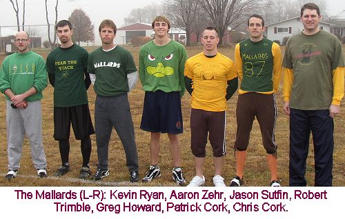 rookies who made their debuts. Aaron Zehr and Jason Sutfin
made their first appearances for the Mallards while Waldrop, Josh Massey
and Evan Barmes joined the Sloth. "We haven't had more than 1 or 2
rookies in the same game in a decade," commented Commissioner Patrick
Cork. "We missed our veterans, but it was great to have some new faces
and extra anticipation leading into the game."
The forecast called for sunny skies
and near 60 degree temperatures, but at game time the temperature hovered
around 50 degrees and the morning fog kept the sun away for the entire game.
The Sloth won the toss and took the ball to start the game. After an incompletion
on first down, Waldrop connected on 3 of his next 4 passes including a 14
yard touchdown strike to Brooks Wilson to open the scoring. Howard led the
Mallards back down the field with a pair of completions to Patrick Cork
to knot the game at 7 apiece as both new QB's seemed to be comfortable early.
Waldrop found Josh Massey behind the defense for a 28 yard score on the
next drive for Massey's first career catch and touchdown for a 14-7 Sloth
lead (VIDEO). On the third play of the next drive, the first major defensive
play was made by the Sloth as Willy Truitt picked off Howard's pass near
midfield. It took just two plays to convert the turnover into points as
Waldrop found Wilson again for a score and the Sloth had the first two-score
lead of the game at 21-7. On the first play of the ensuing possession, the
Mallards had their first of what would be many long touchdown strikes as
Howard found 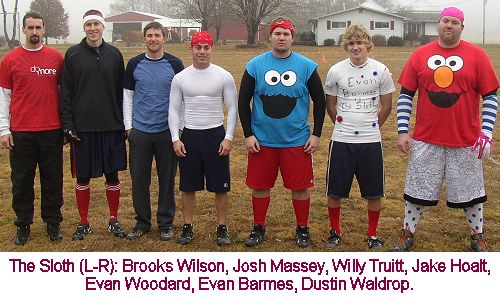 Robert
Trimble in the flat for a short completion that Trimble turned into a 38
yard score as he darted through the defense for a touchdown to make the
score 21-14.
The back-and-forth action heated up
on the next possession as Waldrop tried to hit Willy Truitt on a deep sideline
pass but the ball was tipped and intercepted by Patrick Cork for the first
Sloth turnover of the game. However, the Mallards were unable to capitalize
on the turnover when the first pass Howard threw on the following possession
was deflected away from intended receiver Aaron Zehr and was grabbed out
of the air by Evan Woodard for his first career interception. As Woodard
was being pulled down, he was able to lateral to rookie Evan Barmes who
returned the ball from midfield all the way to the 2-yard line (VIDEO).
Woodard was rewarded for the defensive effort with a 2-yard touchdown grab
from Waldrop two plays later and the Sloth lead was back to 14 at 28-14.
"We got the turnover we wanted, but gave it right back to them,"
remarked Howard. "I was trying to force things a little too much early
and wasn't taking what the defense gave me." Trimble responded immediately
again with another length-of-the-field catch and score as he shook off four
potential tacklers en route to the endzone to cut the lead to 28-21 (VIDEO).
The Sloth threatened again on the next 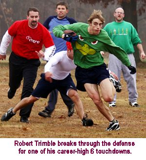 possession, and appeared to have another touchdown, but Waldrop's
throw to the back of endzone went through Josh Massey's hands forcing a
third and long play. The drop would be costly as Waldrop's next pass was
intercepted by Robert Trimble near the goal line for the second Sloth turnover,
and fourth turnover of the game. Howard hit Patrick Cork in the corner of
the endzone for a score to close the first quarter with the two teams tied
at 28-28.
Despite the four combined turnovers,
each team was able to find the endzone four times in the opening period.
Howard completed just 7-of-16 passes for four scores and two interceptions
while Waldrop hit 9-of-19 for four scores and two interceptions as well.
"It definitely wasn't the prettiest quarter we have ever seen at Cork
Bowl," remarked announcer Tony Cork. "And it didn't get any better
early in the second quarter. The defenses seemed to be playing a lot tighter
coverage than many other years and the quarterbacks didn't have as much
open room to throw. With Greg and Dustin both playing their first game under
center, you wonder how much those rookie jitters had to do with it."
Patrick Cork led the Mallards with 3 catches and 2 scores in the quarter
while Brooks Wilson had 3 receptions and 2 scores as well to lead the Sloth.
The Sloth began the second quarter
with the ball and Waldrop hit Wilson for his third score of the day for
a 35-28 advantage. The Mallards tried to respond by going to a no-huddle
offense on the following 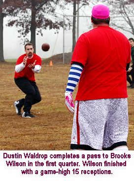 possession but were not successful. It worked well early as
Howard completed back-to-back passes to move the ball across midfield, but
on the next play he tried to hit Patrick Cork on a deep route into the endzone
where Brooks Wilson picked off Howard again for a touchback. In the first
19 passing attempts of the game, Howard was picked off 3 times. However,
for the second time of the game the opposing team turned the ball over on
the first play following an interception as Trimble jumped in front of a
slant route intended for Jake Hoalt for his second interception of the game
and Howard found Trimble on the next play for a 5-yard score and the game
was once again tied at 35-35.
"The momentum swings early in
the game were unprecedented," commented 20-year veteran Chris Cork.
"We've had games with a number of turnovers but none of them came so
close together like they did early in the game." Of the first 43 plays
of the game there were 6 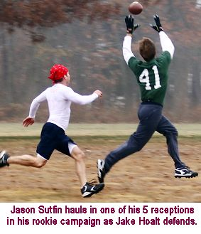 interceptions and 10 touchdowns. "It was a little surreal
with all the crazy plays early," added Patrick Cork. "It was almost
to the point you were expecting something bad to happen every time you had
the ball. I think both defenses sensed the quarterbacks were a little on
edge and really picked up the intensity." Jake Hoalt scored his first
touchdown of the game on the next drive to give the Sloth a 42-35 lead,
but the Mallards responded with a one-play drive as Howard found Jason Sutfin
open deep down the field for his first career touchdown that tied the score
at 42-42 (VIDEO). Hoalt scored again on the next Sloth possession to put the
score to 49-42, but once again the Mallards responded with a one-play scoring
drive as Aaron Zehr took a short pass in the flat and turned it into a 38-yard
touchdown for his first career catch and score to tie the game at 49-49
(VIDEO).
Waldrop was victimized by his nemesis Robert Trimble once again on the next
drive as Trimble picked off a pass for the third time in the half near midfield
and returned it all the way for a touchdown to give the Mallards their first
lead of the game at 56-49 (VIDEO). Despite running only six offensive plays
in the first 13 minutes of the quarter, the Mallards had scored four times.
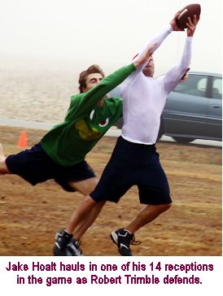 After
a short completion to Wilson to start the next drive, Waldrop hit Evan Woodard
on a short route and Woodard was able to shake a number of tackles and take
it the distance for a 32-yard score to tie the game at 56-56 (VIDEO).
But the Mallards struck quickly once again on a long pass to Jason Sutfin
and a 12-yard scoring strike to Chris Cork for a 63-56 lead. Waldrop completed
four of six passes on the next drive capped off by a two-yard touchdown
strike to Josh Massey to tie the game at 63-63, but Kevin Ryan turned another
short pass into a length-of-the-field score of his own to make the Mallards
lead 70-63 (VIDEO). Again, the quick strike offense of the Mallards
killed any momentum the Sloth tried to gain. After the Wilson interception
early in the quarter, Howard hit his next six passes and five of them went
for touchdowns. In the first 23 minutes of the period, the Mallards ran
only 9 plays from scrimmage but scored six times.
The Sloth had just under two minutes
to go and moved the ball quickly down the field for a score as Waldrop found
Wilson for the fourth time 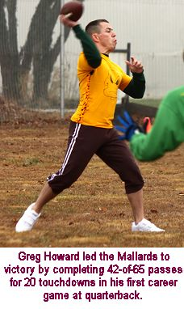 in the half to tie the game at 70-70 with 50 seconds remaining.
After a short completion and an incomplete pass, the Mallards had 30 yards
to go for a score with 17 seconds left in the half. Howard found Trimble
over the middle for 15 yards where the Mallards called timeout with 7 seconds
left. Hoping to get two more plays in, Howard threw quickly to Trimble on
the next play who beat double coverage for a touchdown with just 3 seconds
left in the half as the Mallards moved back into the lead at 77-70. It appeared
to be a huge play in the game because the Mallards would start the second
half with the ball, but the Sloth spent a lot of time going over their options
in the huddle and came up with a beautifully designed play to end the half.
Brooks Wilson was able to break open deep down the middle as the Mallards
defense had a miscommunication in the secondary and Waldrop hit him in stride
in the endzone for a game-tying score to end the half with the score tied
77-77 (VIDEO). "We went over a bunch of different plays and decided
to go deep with it," said Waldrop. "We discussed throwing short
and letting Jake run and try to break a long one, or just throwing something
short and hoping to not turn it over, but Brooks was able to get open and
we really needed that score to stay in the game."
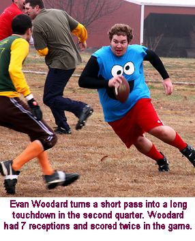 Both
teams scored 49 points in the quarter in completely different ways. The
Sloth controlled the ball for over two-thirds of the quarter as Waldrop
completed 21 passes on 31 attempts for 7 touchdowns and 2 interceptions.
Wilson had 8 catches and 3 touchdowns, Massey had 6 grabs and a score and
Hoalt had 4 receptions and a pair of touchdowns in the quarter. Meanwhile,
the Mallards ran just 13 plays in the quarter with seven of them coming
on their first and last possessions of the half. Howard completed 11-of-13
passes for 6 scores and one interception. Four of the scoring drives for
the Mallards were only one play long, and another drive lasted just two
plays. All six receivers had at least one catch in the quarter and five
of them scored touchdowns.
At halftime, Waldrop was 30-for-50
with 11 touchdowns, but did have the 4 interceptions. Wilson led all receivers
with 11 catches and 5 touchdowns at the break. Josh Massey had 7 catches
and 2 scores while Jake Hoalt had 6 receptions and a pair of touchdowns.
For the Mallards, Howard was 18-for-29 with 10 touchdowns and 3 interceptions.
Robert Trimble led a balanced attack with 5 catches and 4 touchdowns. Patrick
Cork had 4 catches 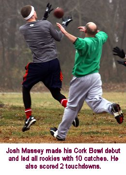 and 2 scores and Jason Sutfin had 4 catches and a touchdown.
At halftime, Mallards rookie Jason
Sutfin attached a FlipCam to Greg Howard's chest. The flip-cam seemed to
work wonders for Howard as he was outstanding the rest of the way. "Never
in my wildest imagination did I ever think we'd have a player wearing a
video camera during a game," stated Patrick Cork. "But of all
people to have a camera attached to him during the game, you couldn't have
picked a better person than Greg to do it." The Mallards marched down
the field to start the third quarter and Howard found Zehr for his second
touchdown of the game to give the Mallards an 84-77 advantage, but long-time
quarterback Willy Truitt hauled in a touchdown pass from Waldrop to tie
the game at 84-84 (VIDEO). It was Truitt's first touchdown reception
since Cork Bowl 14. Chris Cork joined the long touchdown craze for the Mallards
with a 38 yard touchdown grab on the first play of the next 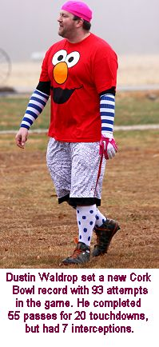 possession (91-84)
(VIDEO),
but Evan Barmes answered with a 38-yard score of his own on the next play
for the Sloth for his first career catch and touchdown to tie the game at
91 (VIDEO).
Howard completed three-of-four passes on the next possession eventually
finding Kevin Ryan for the go-ahead score at 98-91. The Sloth tried to attack
quickly as Waldrop found Hoalt over the middle for what would be the most
interesting play of the game - and the one that swung momentum to the Mallards
to stay. As Hoalt fought for extra yards, Aaron Zehr stripped him of the
ball, picked up the fumble and took off down the field. With Zehr racing
down the sideline, he tried to slow up to cut back to the inside for the
endzone, but Waldrop buried him with a great tackle near the five yard line
jarring the ball loose. Luckily, teammate Robert Trimble was Johnny-on-the-spot
and picked the ball up off the ground and walked into the endzone for a
touchdown and the Mallards had their first two-score lead of the game at
105-91(VIDEO). "I'm pretty sure that's the first play in Cork Bowl
history with two fumble recoveries," remarked Patrick Cork. "I'm
glad they both went our way."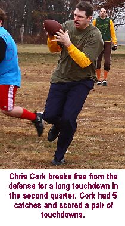
Trailing by two scores for the first
time, the Sloth needed to answer with a touchdown of their own and they
did as Waldrop hit Wilson for a 10-yard score to cut the lead to 105-98.
But Howard marched the Mallards down the field completing two straight passes
to Trimble before finding Patrick Cork for a 10 yard score for a 112-98
advantage. Three straight incompletions put the Sloth in desperation mode
with a 4th and 20 from their own two yard line, but Jake Hoalt was able
to take a short dump-off pass the length of the field for a score to cut
the lead to seven points again at 112-105 (VIDEO). Kevin Ryan hauled in a short touchdown for
the Mallards (119-105) before Waldrop hit Wilson for another length-of-the-field
score to make the score 119-112. Again the Mallards worked quickly as they
needed just two plays to score as Kevin Ryan pulled in his third touchdown
of the frame to end the quarter with the Mallards up 126-112.
The Mallards outscored the Sloth 49-35
in the third quarter, which happened to be the only quarter without an interception.
The only turnover was the fumble from Hoalt midway through the period. Both
quarterbacks 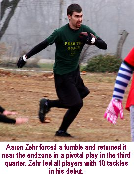 were
extremely sharp as Howard completed 14-of-17 passes for 6 touchdowns while
Waldrop was 10-for-17 with 5 scores. In the second and third quarters, Howard
went 25-for-30 with 12 touchdowns. Robert Trimble led all receivers with
6 catches in the quarter while Kevin Ryan scored on all three of his receptions.
Wilson had two more touchdowns for the Sloth, as each of their six receivers
had at least one reception in the quarter.
With the Sloth trailing by two scores
to start the final quarter, they needed to keep scoring and force a turnover
in order to pull even once again. However, instead of pulling closer, they
fell farther behind. On 4th and 10, Waldrop tried to hit Willy Truitt at
the first down marker but Truitt lost his footing and the pass was intercepted
by Patrick Cork who returned it all the way for a touchdown and the lead
was suddenly three scores for the first time at 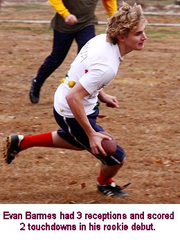 133-112 (VIDEO). Waldrop hit Evan Barmes in the endzone on
the next possession to make the score 133-119, but as was the case all afternoon
the Mallards responded immediately as Howard hit Patrick on the first play
of the next drive for another 38-yard touchdown pass to move the lead back
to 21 points at 140-119 (VIDEO). The Sloth moved the ball inside the 10 yard
line, but Waldrop was once again victimized by Robert Trimble who intercepted
his fourth pass of the game and returned it deep into Sloth territory. Howard
found Patrick again for a 10 yard score and the lead had ballooned to 147-119.
"We needed to come out fast in the final quarter and put some pressure
on the Mallards with some scores and tough defense," remarked veteran
Brooks Wilson. "Instead, we turned the ball over twice in our first
three possessions and gave up three quick scores."
The 28 point hole would be way too
much to overcome late in the game. In full hurry-up mode, Waldrop marched
the Sloth quickly down the field with a 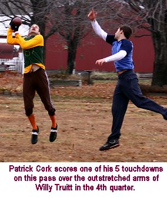 touchdown pass to Wilson, but the Mallards had their longest
possession of the game on the next series running some valuable time off
the clock on a seven-play drive that was capped off with a 4th down touchdown
reception by Robert Trimble to make the score 154-126. Three straight completions
from Waldrop ended with a touchdown to Hoalt to make it 154-133, but Howard
hit Trimble for his sixth touchdown of the game for a 161-133 advantage
with under five minutes to play.
A Willy Truitt touchdown made the
score 161-140, and the only suspense left was whether or not the Mallards
could tie or break the single-game points record of 168 points. Just 12
yards away from history, Howard's pass for Trimble was deflected into the
air and picked off by Josh Massey in the endzone and returned just past
midfield with a minute left to play. On the first play after the turnover,
Trimble picked off yet another pass (his fifth of the game) in the endzone
and went the length of the field for another defensive touchdown for a 168-140
advantage (VIDEO). The Sloth turned the ball over on downs with 3 seconds left
to play and the Mallards had one more shot for a score. They dug deep into
the playbook completing a short pass to Chris Cork who lateraled to Zehr
who then lateraled to Trimble who took it the rest of the way for what appeared
to be a touchdown, but replay reviews showed the second lateral was forward
and therefore the touchdown was disallowed for a final score of 168-140.
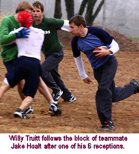
The Mallards capped off a high-powered
second half of play with 42 points in the final quarter after posting 49
in the third. After sizzling through the second and third quarters, Howard
went just 10-for-19 in the fourth period but still connected for four touchdowns
and had one late interception. Waldrop connected on 15-of-26 passes for
four touchdowns, but had 3 costly interceptions - two of which were returned
for scores. Jake Hoalt led all receivers with 6 catches in the final quarter.
Patrick Cork had four catches and a pair of scores for the Mallards while
Trimble had 3 grabs and 2 touchdowns.
For the game, Greg Howard completed
42-of-65 passes for 20 touchdowns for the Mallards. He also had four interceptions
- which was the second-highest interception total for a winning quarterback
in Cork Bowl history. The 42 completions were the fewest for a winning quarterback
since Cork Bowl 15 when Willy Truitt completed just 37 passes in the victory
- which was played in four inches of snow. After a rough start that included
3 interceptions in his first 19 passes, Howard settled down and went mistake-free
for his next 43 passes until the interception with one minute left to play.
"He showed a lot of determination and leadership," remarked receiver
Patrick Cork. "He was frustrated early, but didn't get down on himself
and really stepped up and made some great throws." Dustin Waldrop completed
55-of-93 passes in the defeat. He also had 20 touchdowns, but finished with
7 interceptions. It was the first time in Cork Bowl history a quarterback
threw 20 touchdown passes and lost. The person that seemed to take the loss
the hardest was all-time leading quarterback Willy Truitt. ""We
looked like a team being led by a rookie quarterback," stated Truitt.
"We veterans should have picked up the slack, but that didn't happen.
I feel I could have stepped in and taken 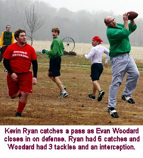 control of the quarterback situation, but that wouldn't have
been fair to Dustin. He deserved the chance to have a full game of snaps
and not to be looking over his shoulder. When he watches this game and watches
some of the coverage he threw into, he'll wonder what he was doing. And,
he'll be a better quarterback next year because of it. I had a high interception
game early in my career, so I've been there. We're not ready to write him
off. I think he has a future here."
Robert Trimble led the way offensively
for the Mallards with 14 catches and tied a career-high with 6 touchdowns.
Patrick Cork had 10 receptions and 5 touchdowns while Kevin Ryan had a big
second half finishing with 6 catches and 4 touchdowns. Chris Cork had 5
receptions and a pair of scores. Both Mallard rookies had solid debuts as
Jason Sutfin finished with 5 catches and a touchdown while Aaron Zehr scored
on both of his catches. "We would have loved to get the rookies a little
more involved offensively," said Greg Howard. "With all the defensive
touchdowns and so many one-play scoring drives there just weren't enough
plays to get everyone the ball as much as we had planned. I thought all
six receivers on our team were capable of catching 8 to 10 passes, but we
scored too many quick touchdowns for that to happen. It seemed every time
we ran a play for someone in particular, it broke down and we had to look
elsewhere."
For the Sloth, Brooks Wilson followed
up his MVP performance in Cork Bowl 19 by leading all receivers with 15
catches and 8 touchdowns. Jake Hoalt also responded from his career game
in last year's contest with another great effort of 14 catches and 4 scores.
Rookie Josh Massey had an outstanding debut hauling in 10 passes for a pair
of touchdowns while Evan Woodard had the best game of his four-year career
with 7 catches and 2 touchdowns. Willy Truitt, playing receiver for the
first time since Cork Bowl 14, had 6 catches and a pair of touchdowns and
rookie Evan Barmes hauled in 3 passes and scored twice. 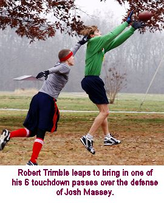
Defensively, rookie Aaron Zehr of
the Mallards led all defenders with 10 tackles and also had the game-turning
forced fumble and fumble recovery in the third quarter. Patrick Cork had
8 tackles and 2 interceptions, returning one for a touchdown. Robert Trimble
had 7 tackles and a record-tying 5 interceptions - two of which were returned
for scores. He also recovered a fumble for another touchdown. Kevin Ryan
finished with 6 tackles, Chris Cork and Jason Sutfin each had 3 tackles
and Greg Howard had a pair of tackles despite playing the entire game at
quarterback. Jake Hoalt led the Sloth with 8 tackles while rookie Evan Barmes
had 5. Josh Massey had 4 tackles and an interception and Brooks Wilson and
Evan Woodard each had 3 tackles and an interception. Willy Truitt had 1
tackle and an interception and Dustin Waldrop had a tackle and a forced
fumble from the quarterback position.
A number of Cork Bowl records were
set in the game. As mentioned, the Mallards tied the single-game points
record of 168 points set by the Muskrats in Cork Bowl 6 despite scoring
just 20 offensive touchdowns. The four defensive touchdowns scored by the
Mallards (3 interception returns and one fumble return) were also a single-game
record. Robert Trimble tied Reggie Truitt's record for most interceptions
in a game with 5 - returning two for touchdowns. "The 168 points and
five interceptions were records I didn't think would ever be broken,"
reflected Commissioner Patrick Cork. The 168 points scored by the Muskrats
in Cork Bowl 6 came in a 168-147 win that included a 63 point second quarter.
The five interception game from Reggie occurred in Cork Bowl 12 when Patrick
Cork fractured his collarbone early in the game and the Meerkats were outmatched
at every position the rest of the way. Two more records were set by rookie
quarterback Dustin Waldrop of the Sloth. Waldrop's 93 pass attempts broke
the record of 92 previously held by Kirby Newell. 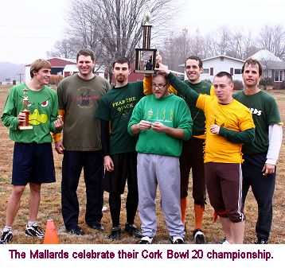 On the downside, Waldrop also tied Reggie Truitt's dubious
record of 7 interceptions that had stood alone since Cork Bowl 7.
The eleven interceptions in the game
were the second-most in Cork Bowl history - second only to the 13 that were
thrown in Cork Bowl 7. They also equaled the number of interceptions that
had been thrown in the previous five Cork Bowls combined. "All those
interceptions were definitely not expected," said Willy Truitt. "As
a long-time quarterback in this game, I know how hard it is to find the
right receiver and not make mistakes, but with no rushing the passer anymore
I don't think anyone would have anticipated that many interceptions. I thought
both guys might make some mistakes, just not that many."
In the least suspenseful voting in
Cork Bowl history, Robert Trimble took home MVP honors for the third time
in his career. Trimble was responsible for 6 offensive touchdowns and 3
defensive scores for the Mallards. His five interceptions tied a Cork Bowl
record, as did his three defensive scores (VIDEO OF ALL 5 INTERCEPTIONS). "It seemed like Robert was everywhere
no matter where I threw the ball," responded Waldrop. "There were
a few times when the receiver was wide open when I let the pass go but by
the time it got there he had closed so much ground that he either picked
it off or knocked it down. And we didn't have much of an answer for him
on the offensive side of the ball either." As for the rookies, all
five made solid contributions but the Rookie of the Year was awarded to
Aaron Zehr of the Mallards. "His biggest impact on the game was on
defense, and most importantly that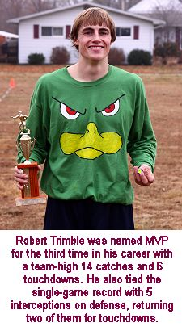 forced fumble
in the third quarter," remarked play-by-play man Tony Cork. "That
play, more than any other, turned the game in the Mallards' favor because
the Sloth were never able to tie the game again after that. He led the game
in tackles, played some solid defense and had a couple big plays on offense
as well." Josh Massey of the Sloth was a close second in the voting.
It was definitely a game like few
others in Cork Bowl history. Despite the high point totals, the yardage
totals were not that close to record levels since the stat started being
calculated six years ago. "There was so much hidden yardage with all
the interceptions," stated Tony Cork. "There didn't seem to be
any flow or rhythm to the game from the first quarter on. Other than the
third quarter, neither team went too many consecutive possessions without
a turnover." The Mallards scored 20 offensive touchdowns on only 42
completions. In addition to the four defensive scores, they scored on their
first play on 8 possessions. Included in those were seven length-of-the-field
touchdown passes to start off drives - one for each of the six receivers
on the team and two from Trimble. "That might be the most amazing stat
of the game," reflected Patrick Cork. "To have all six guys take
a pass 38 yards for a score - and for it to happen on the first play of
the drive every time is hard to believe." The Sloth also had a number
of quick-strikes in the game as they had four length-of-the-field touchdowns
including two from Brooks Wilson. The eleven length-of-the-field touchdown
plays accounted for over 1/4 of the offensive touchdowns in the game. "The
coverage was the best I've seen in a long time," added Chris Cork.
"The tackling, however....not so much."
As for the new 7-man rosters, there
were no complaints heard from the participants. "The consensus was
the extra player was welcomed with open arms," stated Commissioner
Patrick Cork. "If we continue to have two quarterbacks that will play
that position only, it's definitely something we will look at continuing
in future years. The only downside was that not everyone was as involved
on offense as prior years, but everyone was much fresher as the game moved
into the second half. Despite all the points, I think having fresh bodies
out there resulted in the best defense we have seen in a long time. There
were far less uncontested 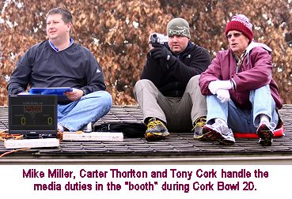 completions, and
obviously guys were close enough to the receivers to intercept 11 passes.
The tackling wasn't as sharp as some years, but the coverage was the best
we've seen in many years. The poor tackling I think had a lot to do with
so many rookies out there trying to get adjusted to the speed and intensity
of the game, and that we were missing the all-time leader in tackles (Greg
Howard) on the defensive side."
Although no official retirements were
announced following the game, Kevin Ryan and Willy Truitt both made it well
known there would be stipulations that would need to be met for them to
continue playing. "I can't take the running and hitting like I used
to," remarked Willy Truitt. "I'd love to keep playing quarterback
for a long time, but if I can't be under center the whole game I don't think
I can keep going." Truitt is close to some additional milestones on
offense as he closes in on 500 completions and 200 touchdowns so it is highly
likely the Cork Bowl brass will do everything they can to keep Truitt playing.
As for Kevin, the need for 7-man rosters is the sticking point for his career.
"My hip and leg are getting worse with each passing year, but if we
have 7-man rosters I may have another game or two left in the tank. If we
go back to six-man rosters though, I think I'm done. I'm 50-50 right now
- but I've been that way for a while now." Chris Cork was silent once
again on his future and has stated many times that he is "year-to-year".
With the influx of rookies, it would appear Cork Bowl has enough horses
in the stable to continue to thrive. "We had a lot of new talent on
the field this year," added Patrick. "And we were missing Williamson
and Tomlinson as well. If we lose a player or two next year, I think we
had a few guys show they can step in and fill that void for years to come.
The older we get, the more concerned the league executives get about the
future, but if today was any indication of things to come, the future is
bright."
CLICK HERE FOR FULL VIDEO HIGHLIGHTS
Cork Bowl 20 Game Notes:
Robert Trimble's five interceptions
moved him into 6th on the all-time list with 6....Patrick Cork passed the
250 mark in career receptions - his 10 catches give him 254....Dustin Waldrop
is 6th all-time in completions with 55 in his debut....Robert Trimble moved
into 9th on the all-time receptions list with 76....Brooks Wilson's 18 catches
moved him to 151 in his career....Patrick Cork's two interceptions moved
him into a tie for second all-time with 12....Aaron Zehr's 10 tackles put
him in a tie for 18th all-time after just one game....Dustin Waldrop's 21
completions and 31 attempts in the second quarter are "unofficial"
records for one quarter....All four rookies scored receiving touchdowns
in the game....Brooks Wilson has recorded at least 12 catches and 5 touchdowns
in eight consecutive games....
Postgame Quotes:
Jason Sutfin: "I think my performance solidifies my spot in history
as the 2nd best 40+ year-old ever to take the field at the Cork Bowl. And
the best defensive player on the Sloths was undoubtedly the pitcher's mound…that
thing comes out of nowhere to make tackles."
Evan Barmes: "I think our team fared fairly fair for how young our
team was - several first timers, Woodard with only a few years, and a first
time QB I think, or at least hope for his sake. Next year I think I'll try
to combat Greg Howard mentally instead of physically. I'll be in his head,
in his face, and several other places he probably doesn't want me to be...
like in his kitchen when he arrives home after the game... fixing him a
large plate of DEFEAT, with a side of PAIN!"
Willy Truitt: "I was an embarrassment on offense and defense. I was
obviously timid on defense because of my back. I wasn't challenging anyone
on tackles. It's sad. I should have played better. I'm determined to come
back next year and rebound. Hopefully the league can find a spot for me
to quarterback. I think that is where my value is for one of these teams.
At best, I'm a 3rd or 4th option as a receiver. I don't have good size,
speed, or strength. That doesn't bode well for going over the middle or
going deep, which is pretty much the name of the game in Corkbowl. I missed
being the man in charge of an offense this year. I do best by keeping turnovers
down, scoring on every drive, and putting the pressure on the other team.
That's been my game the past few years. We'll see which direction the Sloth
organization wants to go. I obviously present cap issues and limit flexibility
in the free agent market. They may opt to cut me and go with Dustin. I will
understand and be knocking on some doors to try to find a team to get back
to Corkbowl 21 with next November. I'm not done here."
Color Commentator Mike Miller: "Entering Cork Bowl XX, I knew there
would be a lot of question marks with five rookies and two inexperienced
QBs. The inexperience showed early with both Howard and Waldrop struggling
to adjust to the speed of the game. Howard was able to adapt quicker, while
Waldrop never could solve Robert Trimble and the Mallard defense. The unexpected
surprise was Aaron Zehr. Can't say I was expecting much out of him (mainly
because of his mediocre fantasy baseball performances.) But he made a serious
impact on defense and broke two big plays on offense as well. Definitely
rookie of the year in my opinion."
Play-by-play Announcer Tony Cork: "It was Turnover City early in the
game! Trimble was terrific but Elmo was...well....not so hot. Greg really
settled down and played remarkably well after the first quarter. He was
very impressive. I thought all the rookies did fine - you could see some
green at times, but they more than held their own. It was nice to see an
"experienced" guy like Jason out there this year. He did a good
job - very respectable. I'm glad to have another member in the 40+ club
for Cork Bowl. It looked like I was going to have to play quarterback for
both teams late in the first quarter because every pass was intercepted.
The old coach can still throw the ball! And I was glad we could finally
get Ethan his nap - he really needed to take one!"
(Click Here for More Pictures!)
For all pictures from the game visit Cork
Bowl 20's Picasa/Google Image Center
Back to top
Cork Bowl 20 Stats
Back to Cork Bowl |